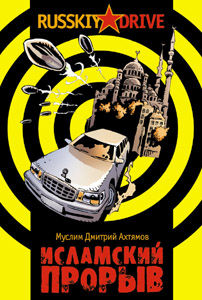
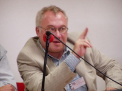
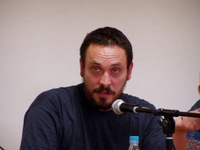
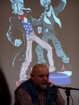
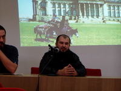
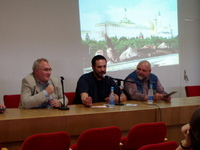

Муслим Дмитрий Ахтямов • Исламский прорыв • russkiy drive • 29.11.2004
 
На смену сподвижникам последнего пророка Мухаммада, отдавая дань технократической эпохе, явился новый тип моджахедов из партии Аллаха,сжимающих в карающей длани компьютер и Коран. Повесть о простом русском человеке, который перестал быть рабом современного социума, что, по сути, есть завуалированная глобальная рабовладельческая система. Главный герой после мучительного духовного поиска и обретения смысла жизни обращает свой взор в сторону абсолютного Единобожия – Ислама.
Пресса и контекст
Исламский прорыв! Сотрудничество или война?
8-го сентября в 14:00 в конференц-зале №4 павильона 20 в рамках Московской международной книжной ярмарки издательства «Ультра.Культура» и «Умма» проводят круглый стол, посвященный публикации романа Дмитрия Ахтямова «Исламский прорыв». Участники:
- Гейдар Джемаль – председатель «Исламского комитета России»
- Михаил Леонтьев – телеведущий, главный редактор журнала «Главная тема»
- Дмитрий Быков – телеведущий, поэт, писатель
- Эдуард Лимонов – председатель Национал-большевистской партии России
- Максим Шевченко – руководитель Центра стратегических исследований религии и политики современного мира
- Илья Кормильцев – руководитель издательства «Ультра.Культура»
- Асламбек Эжаев – руководитель издательства «Умма»
Не будет преувеличением сказать, что XXI век начался как век нового облика ислама, ворвавшегося в новейшую историю одним из важнейших ее политических, экономических, социальных и культурных факторов.
Некоторые политологи считают, что пришло время говорить о таком явлении, как «исламский прорыв».
Реакция на «исламский прорыв» неоднозначна: он вызывает как сочувствие, так и опасения, как солидарность, так и ответный силовые и весьма жесткие порой действия.
Для России проблема выстраивания отношений с исламом вообще и политическим исламом в особенности является важнейшей геополитической задачей.
Сотрудничество или война на уничтожение?
Несомненно, что от ответа на этот вопрос зависит и историческое будущее нашей страны, перспективы и границы выстраивания ее суверенитета в грядущем столетии.
Издательство «Ультра.Культура» с самого начала своего существования уделяло немало внимания исламской теме: в числе выпущенных книг и вызвавшая скандал антология «Аллах не любит Америку» и фундаментальный труд Гейдара Джемаля «Революция пророков».
В новом сезоне в «Ультра.Культуре» выходят «Революционный ислам» Ильича Рамиреса Санчеса и роман Муслима Дмитрия Ахтямова «Исламский прорыв»
Вас ожидает дискуссия на одну из самых волнующих тем современности и книжные подарки.
«Круглый стол» на книжной ярмарке. Презентация «Исламского прорыва». 13.09.2005
Как уже анонсировалось ранее, в прошлый четверг в рамках мероприятий на уже подходящей к концу 18-й Московской международной книжной выставке-ярмарке прошел «круглый стол» под общим девизом: «Исламский прорыв! Сотрудничество или война?». Эта встреча была организована издательством «Умма» и издательством «Ультра.Культура» прежде всего как презентация новой книги серии «Русский драйв» — «Исламский прорыв» (автор Муслим Дмитрий Ахтямов), но в процессе разговора, особенно по мере прибытия приглашенных гостей, презентация плавно перетекла в беседу на острые темы взаимного понимания (или непонимания?) между исламским Востоком и так называемым «христианским» Западом. В мероприятии приняли участие Асламбек Эжаев, руководитель издательства «Умма», Илья Кормильцев, главный редактор издательства «Ультра.Культура», Гейдар Джемаль, председатель Исламского комитета России, Максим Шевченко, руководитель Центра стратегических исследований религии и политики современного мира.

Илья Кормильцев
К сожалению на этой встрече присутствовали не все из приглашенных гостей. Сославшись на сильную занятость, загруженность, а так же на злющие московские пробки, некоторые видные деятели сегодняшней российской политологии, а так же представители СМИ отказались участвовать в диалоге, что впрочем нисколько не сделало мероприятие менее интересным, хотя и повлияло на общий ход беседы, потому как сторонники «исламского прорыва», получилось так, были в подавляющем большинстве. В конце концов создалось впечатление, что сторонники современного ислама переигрывают своих оппонентов если и не в интеллектуальных дискуссиях, то уж в степени участия и открытости — точно. Мусульмане — и это видно, готовы говорить о себе и о своей религии открыто, и используют для того любую предоставляющуюся возможность, в то время как их оппоненты апатичны, вялы, и производят впечатление людей которым вообще ничего не надо.

Максим Шевченко
Встреча началась с выступления Максима Шевченко, в котором прозвучал призыв к сотрудничеству между Востоком и Западом. Максим говорил о диалоге между нациями и религиями, диалоге, который приведет в взаимному пониманию и устранит причины для вражды. Затем с короткой речью выступил Асламбек Эжаев, поблагодаривший издательство «Ультра.Культура» за публикации книг авторов-мусульман, которые его издательству было бы трудно «безболезненно» для себя напечатать.

Гейдар Джемаль
Последним слово взял Гейдар Джемаль, который аргументировано рассказал присутствующим о мусульманской религии как о религии прогрессивной и миролюбивой, а так же о мусульманском религиозном менталитете реалистичного и конструктивного подхода к решению различны жизненных проблем.
Затем всем присутствующим была предоставлена возможность задать вопросы, и не в пример других презентаций, многие сидящие в зале такой возможностью воспользовались. В процессе ответов на вопросы Илья Кормильцев подметил условность такого понятия как «христианская цивилизация», напомнив слова одного обратившегося в христианство мусульманина, который сказал, что если бы все называющие себя христианами на самом деле были бы последователями Христа, то на Земле, кроме христианства, не осталось бы больше никаких религий вообще.

Асламбек Эжаев
В целом можно подытожить, что встреча прошла в духе если и не взаимного понимания, то уж в стремлении понять «другую сторону». Побольше бы таких встреч!

Oтветы на вопросы из зала
Конкурс «Исламский прорыв» (03.11.2005)
В России учреждена открытая литературная премия «Исламский прорыв»
МОСКВА, 31 окт — РИА Новости, Ольга Липич.
В России объявлен конкурс на открытую литературную премию «Исламский прорыв».
«Цель конкурса — пробудить интерес российской общественности к духовной жизни и культуре ислама ради взаимопонимания, мира и прогресса», — сообщил РИА Новости в понедельник директор издательства «Умма» (в переводе «община») Аслам Эжаев.
Учредителями литературной премии выступили также Совет муфтиев России и Федеральное агентство по печати и массовым коммуникациям.
Конкурс проводится в трех номинациях: «Проза», «Поэзия» и «Публицистика». Принимаются произведения ныне живущих авторов, написанные на русском языке, в которых затрагивается исламская проблематика.
Состав жюри конкурса — межнациональный и довольно неординарный. В него вошли, в частности: автор ряда текстов для группы «Наутилус» Илья Кормильцев; лидер молодежного крыла партии «Родина», писатель Сергей Шаргунов. Возглавил жюри главный редактор журнала «Дружба народов» Александр Эбаноидзе.
Победители конкурса в каждой из номинаций получат: за 1 место — «ценный приз» (какой — не разглашается), за 2 место — 15 тысяч рублей, за 3 место — 5 тысяч рублей. Кроме того, всем лауреатам будут вручены дипломы и набор книг под названием «Библиотека мусульманина».
Работы принимаются на конкурс до 1 февраля 2006 года. Вручение премий победителям состоится в марте будущего года на 9-й Национальной выставке-ярмарке «Книги России».
Примечательно, что в пилотном, «поэтическом» проекте конкурса, который прошел в минувшем году, призовые места заняли немусульмане.
http://www.rian.ru/culture/literature/20051031/41946881.html
Обращение к авторам.
Дорогие братья и сестры! Друзья!
Премии «Исламский прорыв» нет еще и года. Но это не повод с первых шагов ограничивать себя узкими рамками «лягушатника», создавая льготные условия для будущих авторов и членов жюри.
С первых дней своего существования мы попытались активно включиться в литературный процесс, заявить о себе как о полноценной литературной премии, способной открыть новые имена в современной русской литературе.
Опыт прошлого года, когда проводился поэтический конкурс «Читая сладостный Коран» показал, что исламская тематика близка не только писателям-мусульманам, но и представителям других конфессий, которых волнует проблема духовного поиска: все три победителя прошлогоднего конкурса не были приверженцами ислама.
Вместе с тем, далеко не все присланные в прошлом году работы соответствовали заявленной в условиях конкурса тематике и могли отвечать элементарным критериям художественности. Перед жюри иногда стоял непростой выбор — некоторые из присланных работ были написаны от всего сердца, со всей искренностью верующего человека, но имели весьма низкий художественный уровень по причине литературной неискушенности их авторов. Однако призовых мест было всего три, и подобные работы не вошли в число победивших.
В этом году мы надеемся расширить число тех, чей литературный талант не должен остаться незамеченным. Учрежденная в этом году открытая литературная премия «Исламский прорыв» объявлена в трех номинациях: «Проза», «Поэзия», «Публицистика».
С первыми двумя номинациями все ясно. Отдельно хочется сказать о номинации «Публицистика». За последние несколько десятилетий ислам во всем мире приобрел (особенно в глазах немусульман) политический оттенок. Не остался в стороне и литературный процесс. Мы почувствовали это, когда стали получать стихотворные работы в прошлом году. Некоторые из них скорее можно было назвать публицистическими стихами, чем собственно поэтическими произведениями. Учитывая интерес к роли ислама в современном мире, мы решили учредить отдельную номинацию «Публицистика».
Вместе с тем, мы попросили бы наших читателей не путать сиюминутные злободневные комментарии (пусть и облеченные в художественную форму), с творческим осмыслением актуальных проблем, имеющих отношение к исламу и мусульманам.
Для достижения целей большей открытости премии Оргкомитет принял решение опубликовать на сайте Премии www.konkurs.ws все работы, вошедшие в лонг-лист (длинный список). Таким образом, все желающие смогут принять участие в обсуждении поданных на соискание Премии работ. На основании мнения читателей мы учредим Приз зрительских симпатий для произведений, не вошедших в шорт-лист (короткий список), но вызвавших наибольший интерес со стороны читателей.
Желаем успеха всем участникам нашего литературного конкурса!
Оргкомитет Открытой литературной премии «Исламский прорыв».